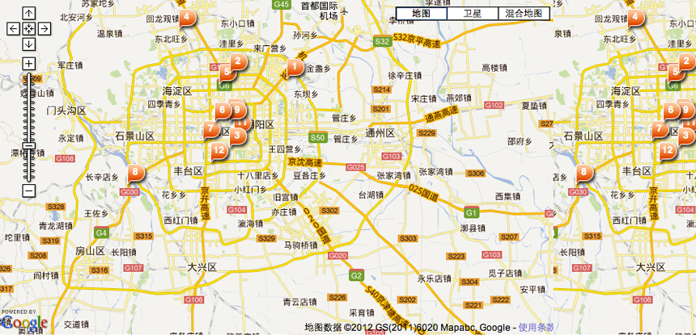

图片
景点
机场
商场
去九寨沟的人还会去
北京首都机场
丽江三义机场（IATA代码：LJG，ICAO代码：ZPLJ），为位于中国云南丽江的民用机场，占地面积1800亩，机场飞行区等级为4D，跑道长3000米，可供波音737-800及D类型及以下机型起降为位于中国云南丽江的民用机场。
 北京火车站
北京火车站
北京站，亦可称北京火车站或北京车站，是北京铁路局辖下的铁路客运特等站之一。车站坐落于北京市东城区东二环以内、东长安街以南、原北京内城城墙以北、崇文门与东便门之间。车站占地面积25万平方米，总建筑面积8万多平方米。车站站台为地上站台，共有8座港湾式站台，站内股道16条。
北京三里屯客运汽车站
丽江三义机场（IATA代码：LJG，ICAO代码：ZPLJ），为位于中国云南丽江的民用机场，占地面积1800亩，机场飞行区等级为4D，跑道长3000米，可供波音737-800及D类型及以下机型起降为位于中国云南丽江的民用机场。